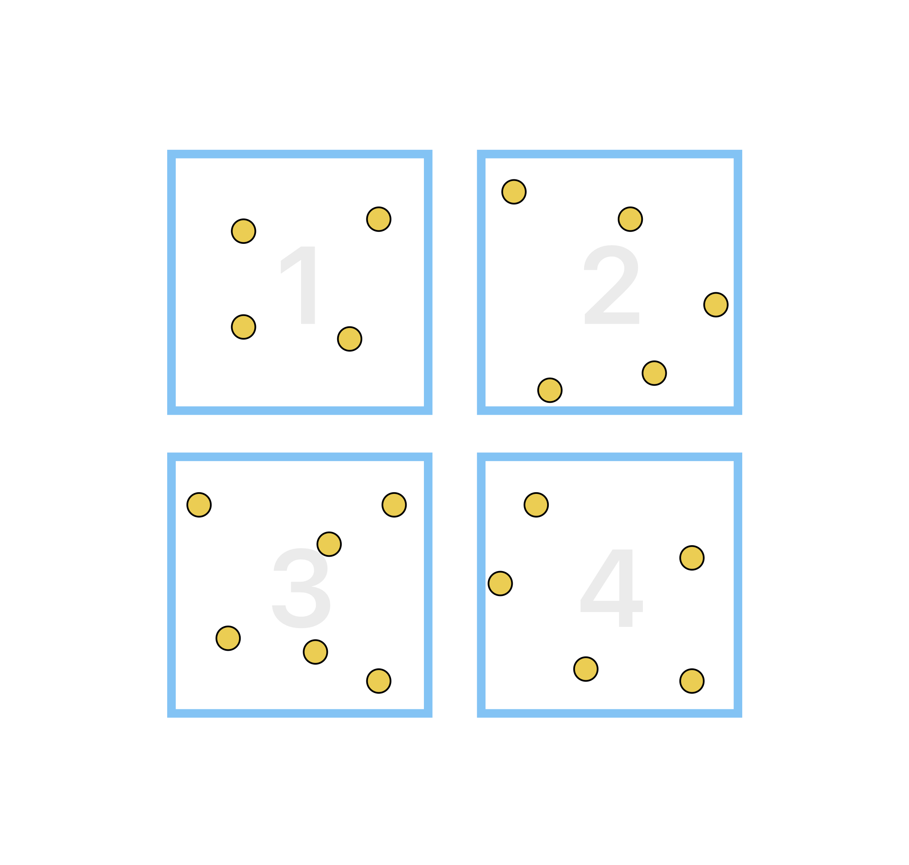
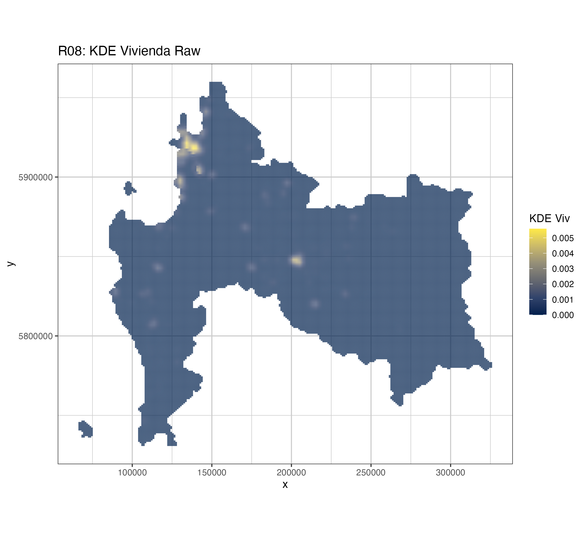
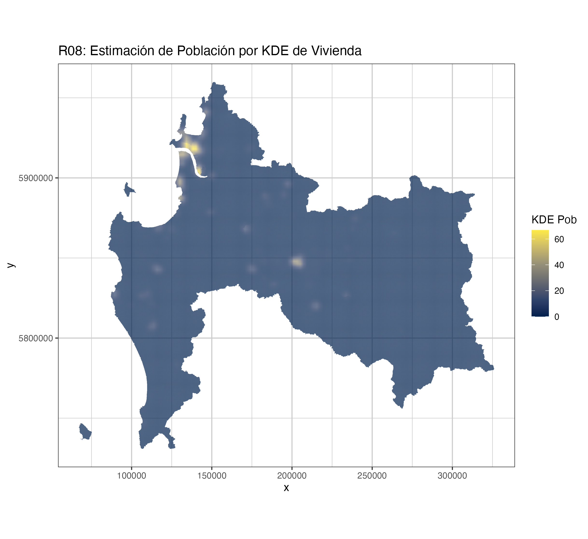

library(sf)
library(dplyr)
library(purrr)
library(mapview)
library(raster)
library(exactextractr)
source("R/fnc_spatial.R")Appendix B — Cálculo de Población
Estimación de Población Urbana-Rural
B.1 Introducción
Para los efectos de la siguiente explicación de procesamiento de información se definirà como área de estudio la región de Bío Bío, y en términos generales se define como el proceso de asignación de población urbano-rurarl por densidad de viviendas, para tener una metodología homogada para los análisis del presente estudio.
Para obtener la información de viviendas localidades reurales se utilizó como la base de viviendas rurales provenientes del Precenso 2016, mientras que para el caso de viviendas rurales se utilizó la información resultado del Censo 2017 ambas bases correspodientes al Instituto Nacional de Estadísticas,.
La metodología imputación de población por cantidad de viviendas en la región, se realizará siguiendo los siguientes pasos:
- Imputar información administrativa a viviendas rurales
- Muestreo aleatorio de viviendas urbanas dentro de cada manzanas
- Kernel Desnsity Estimation (KDE) de Viviendas
- Imputar La población a las celdas del KDE
A continuación se explican los detalles y resultados por cada tipo de procesamiento:
B.2 Imputar información administrativa a viviendas
Librerías
Lectura de Insumos
vr <- st_read("../../insumos/vivienda_rural/Vivienda_Rural_Publica.shp") %>%
st_transform(32719)
mz <- list.files(path = "../../insumos/manzanas/",
pattern = ".rds$", full.names = T) %>%
map_df(readRDS)Imputar Información Administrativa
vr_info <- add_info_intersects(mz, vr)Filtrar por la región de estudio
vr_r08 <- vr_info %>% filter(REGION == "08")
# saveRDS(vr_r08, "data/rds/R08_viv_rural.rds")B.3 Muestreo aleatorio de viviendas urbanas dentro de cada manzanas
Considerando que se necesita realizar una estimación de población basándose en la cantidad de viviendas de toda la región,
En este parte se porcede a realizar la creación de puntos de viviendas aleatorias dentro cada manzana urbana, de acuerdo a la cantidad registrada en el Censo 2017. A continuación se ejemplifica gráficamente el procedimiento espacial que se realizará. La Table B.1 representa un ejemplo de manzanas urbanas con su información de cantidad de viviendas, mientras que en Figure B.1 se observa visualmente su resultado.
| ID | Viviendas |
|---|---|
| 1 | 4 |
| 2 | 5 |
| 3 | 6 |
| 4 | 5 |

Lo anterior se realizar siguiendo las siguientes instrucciones generando un objeto espacial tipo puntos por cada uno de los viviendas generadas.
mz_r08 <- readRDS("../../insumos/manzanas/MZ_REGION_08.rds")
urb_viv <- mz_r08 %>%
filter(MANZ_EN == "URBANO") %>%
filter(TOTAL_V > 0) %>%
split(.$ID_MANZCIT) %>%
map(~st_sample(x = ., size = .$TOTAL_V)) %>%
map(~ st_sf(.)) %>%
bind_rows(.id = "ID_MANZCIT")Posteriormente a los puntos generados de viviendas urbanas se le vueve asignar la información censal.
urb_viv <- vu_r08 %>%
left_join(st_drop_geometry(mz_r08), by ="ID_MANZCIT")Finalmente a cada una de estas nuevas viviendas generadas se les debe agregar la población, entonces se va dividir la cantidad de total de personas por manzanas por la cantidad de viviendas. Los resultados se van a ajustar para que sean números enteros.
pob_urb <- urb_viv %>%
mutate(pob_urb = (PERSONAS/TOTAL_V)) %>%
mutate(pob_urb = ifelse(pob_urb<1, 1, round(pob_urb)))
# saveRDS(pob_urb, "data/rds/R08_viv_urb.rds")B.4 Kernel Desnsity Estimation (KDE) de Viviendas
En este punto se procederá a eralizar una analisis de denominado Kernel Density Estimation (KDE) espacial básdose en las viviendas urbanas y rurales para que en una etapa posterior se pueda inferir la población. Los pasos para realizar en análisis de densidad son los siguientes:
- Unificar puntos de viviendas urbanas y rurales
- Creación de Ventana de Trabajo
- Cálculo de puntos por ventana de trabajo
- Análisis de densidad de viviendas
- Transformación a resultados espaciales tipo raster
B.4.1 Unificar puntos de viviendas urbanas y rurales
vu_r08 <- readRDS("data/rds/R08_viv_urb.rds") %>%
dplyr::select(ID_MANZCIT, poblacion = pob_urb)
vr_r08 <- readRDS("data/rds/R08_viv_rural.rds") %>%
dplyr::select(ID_MANZCIT, poblacion = pob_rural)
all_viv <- bind_rows(vu_r08, vr_r08)B.4.2 Creación de Ventana de Trabajo
library(rgeos)
library(raster)
library(spatstat)
library(spdep)
library(tmap)
library(exactextractr)
library(SpatialKDE)
crs_utm <- "+proj=utm +zone=19 +south +datum=WGS84 +units=m +no_defs +ellps=WGS84 +towgs84=0,0,0"
crs_ll <- "+proj=longlat +datum=WGS84 +no_defs"sp_all_viv = as(all_viv, "Spatial")
l_reg <- readRDS("../../insumos/regiones/Regiones_Chile.rds") %>%
filter(REGION == "08")
grid_spacing = 100 # aplicacion comunal, para aplicacion regional usar 500 metros
ext <- extent(l_reg)
x_min <- ext[1] - grid_spacing
x_max <- ext[2] + grid_spacing
y_min <- ext[3] - grid_spacing
y_max <- ext[4] + grid_spacing
w <- as.owin(c(x_min,x_max, y_min, y_max)) # ventana que define espacio de trabajo
r <- fasterize::raster(l_reg,res=grid_spacing)B.4.3 Cálculo de puntos por ventana de trabajo
pts <- coordinates(sp_all_viv)
p <- ppp(pts[,1], pts[,2], window = w)B.4.4 Análisis de densidad de viviendas
pob_hotspots <- stats::density(p, adjust=.05,
weights=sp_all_viv$poblacion)B.4.5 Transformación a resultados espaciales tipo raster
kde_pob <- raster(pob_hotspots)
proj4string(kde_pob)=proj4string(sp_all_viv) # Asignar CRS # corregido
kde_pob <- raster::mask(kde_pob, l_reg) # Cortar por contorno URBANO
kde_pob[kde_pob < 0] <- 0# Reasamplear ------------------------------------------------
kde_pob <- resample(kde_pob, r)
# writeRaster(kde_pob, filenime = "data/tif/R08_kde_raw.tif", overwrite = T)B.4.6 Visualización de Resultados Raw
# rastero to df (na omit)
kde_pob_df_raw <- raster::as.data.frame(kde_pob, xy = TRUE) %>% na.omit()
#paleta
# pal_ndvi<- colorRampPalette(c("gray20", "yellow", "green","springgreen4"))( 200 )
map_kde <- ggplot() +
geom_tile(data = kde_pob_df_raw ,
aes(x = x, y = y,
fill = layer)) +
scale_fill_viridis_c(name = "KDE Viv", option = "E")+
coord_equal()+
ggtitle(paste0("R08: KDE Vivienda Raw") ) +
theme_bw() +
theme(panel.grid.major = element_line(colour = "gray80"),
panel.grid.minor = element_line(colour = "gray80"))
ggsave(plot = map_kde,filename = "images/R08_kde_raw.png")
B.5 Imputar La población a las celdas del KDE
Considerando que los valores resultantes del kernel density estimation corresponden a resultados de densidad de viviendas ponderadas por población, estos resultados fueron ponderados por población comunal, para poder tener los valores asosciados en magnitud a personas controlados por los totales comunales.
- Tabla de Personas por comuna
- Raster de Factores de ponderación Comunal
- Estimación de Población en Raster
- Visualización de Resultados
B.5.1 Tabla de Personas por comuna
comuna <- readRDS("../../insumos/comunas/Comunas_Chile.rds") %>%
filter(REGION == "08")
mz_r08 <- readRDS("../../insumos/manzanas/MZ_REGION_08.rds")
pob_com_tab <- mz_r08 %>%
st_drop_geometry() %>%
group_by(COMUNA) %>%
summarise(personas = sum(PERSONAS, na.rm = T)) %>%
arrange(desc(personas))
comuna <- comuna %>% left_join(pob_com_tab, by= "COMUNA")B.5.2 Raster de Factores de ponderación Comunal
factores_com <- comuna %>%
mutate(raster_sum = exact_extract(kde_pob, y = comuna, fun = "sum")) %>%
mutate(scale_factor = personas/ raster_sum) %>%
dplyr::select(COMUNA, NOM_COMUNA, personas, raster_sum, scale_factor)
r_pob_estimada <- kde_pob
values(r_pob_estimada) <- NA
pond_com_rasterized <- rasterize(factores_com, r_pob_estimada,
field = "scale_factor")B.5.3 Estimación de Población en Raster
r_est_pob <- kde_pob *pond_com_rasterized
# writeRaster(r_est_pob, filename = "data/tif/R08_kde_pob.tif", overwrite = T)B.5.4 Visualización de Resultados
library(ggplot2)
library(viridis)
# rastero to df (na omit)
kde_pob_df <- raster::as.data.frame(r_est_pob, xy = TRUE) %>% na.omit()
map_kde <- ggplot() +
geom_tile(data = kde_pob_df ,
aes(x = x, y = y,
fill = layer)) +
scale_fill_viridis_c(name = "KDE Pob", option = "E")+
coord_equal()+
ggtitle(paste0("R08: Estimación de Población por KDE de Vivienda") ) +
theme_bw() +
theme(panel.grid.major = element_line(colour = "gray80"),
panel.grid.minor = element_line(colour = "gray80"))
# ggsave(plot = map_kde,filename = "images/R08_kde_pob.png")